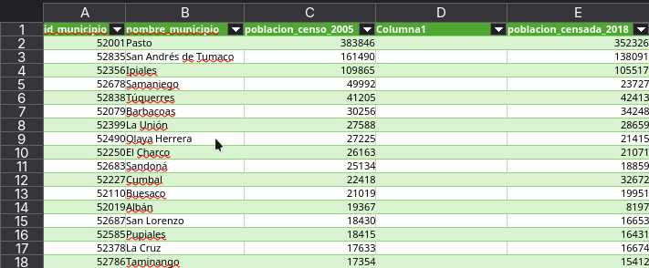
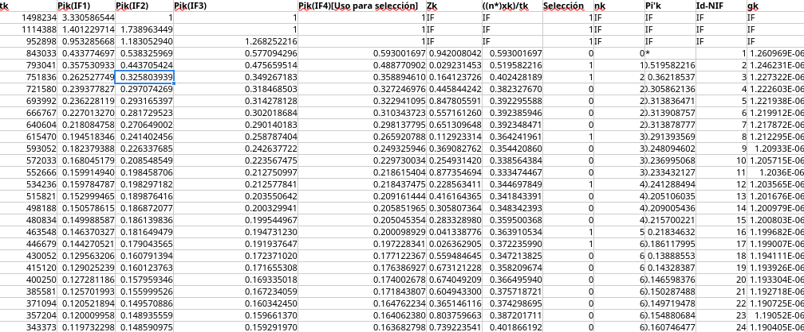
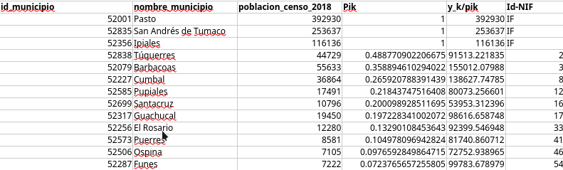
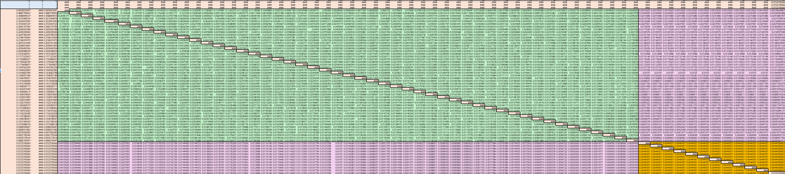
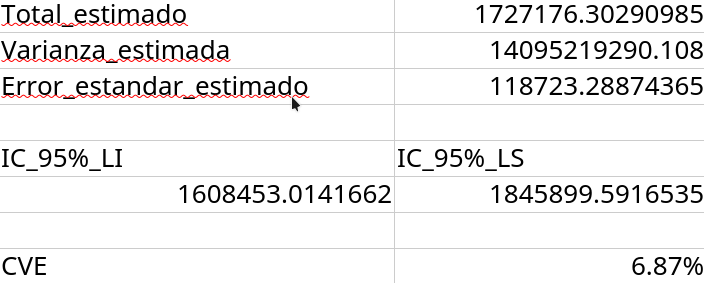

Este documento tiene como objetivo desarrollar 3 métodos de muestreo PPT (Sunter, Rao-Hartley-Cochran (RHC) y método acumulativo total (MAT)), los datos utilizados son los microdatos del DANE correspondientes a los censos del 2005 y 2018, filtrados en base a nuestras variables de interés y al departamento asignado de Nariño.
Los datos sin modificaciones se pueden encontrar en los portales oficiales del DANE y los datos filtrados que se usarán en este documento se pueden descargar directamente en este link. De igual manera, de ser necesario se podrá consultar el código fuente de este proyecto en el repositorio correspondiente.
Método 1: Sunter
Como primer método se realizará el algoritmo de Sunter; para este método se eligió el formato .xlsx, puesto que este permite mayor facilidad al momento de mostrar gráficamente la matriz de probabilidades de inclusión de segundo orden creada. Sin código que explicar, se realizará un resumen del método repasando al mismo tiempo cómo se construyó el documento.
El archivo .xlsx donde se realizó este método de muestreo se puede descargar directamente en el siguiente link –> Método Sunter.xlsx, todo el procedimiento es igualmente explicado en este documento.
El archivo se divide en 2 páginas: la primera es la base de datos de poblaciones de Nariño sin filtrar:
Página #1

(Captura del documento. Página #1)
Las variables a utilizar serán las poblaciones del censo 2005 y 2018.
Página #2
La segunda página del .xlsx es la realización de la metodología, dividida de la siguiente manera:

Una tabla principal donde se desarrolla el método paso a paso, calculando los \(\pi_k\) de manera reiterada para cada selección de los individuos de inclusión forzosa y los correspondientes para las siguientes 2 “etapas” del método de Sunter.

Una segunda tabla con la muestra final obtenida, con su respectiva \(y_k\) y \(y_k/\pi_k\).

La matriz calculada de los \(\pi_{kl}\) usando 5 distintos colores correspondientes a las 5 distintas fórmulas generales del método y la suma correspondiente de los valores de la diagonal. (Esta matriz se aprecia de mejor manera en el archivo .xlsx descargable acá)

Finalmente, tenemos casillas donde se ubicaron los valores finales de las estimaciones y un intervalo de confianza al 95%.
Método 2: Rao-Hartley-Cochran (RHC)
El archivo .r donde se realizó este método de muestreo se puede descargar directamente en el siguiente link -> RHC.r, todo el código es igualmente explicado en este documento.
Para el segundo método tomaremos, de nuevo, una muestra de 12 individuos basada en nuestro dataframe.
library(dplyr)
Attaching package: 'dplyr'
The following objects are masked from 'package:stats':
filter, lag
The following objects are masked from 'package:base':
intersect, setdiff, setequal, union
set.seed(5) #seed para reproducibilidad, se elige el número 5 para manifestar esa notapoblacion <-read.csv("narino_poblacion_censo_2005_2018.csv")poblacion$id_municipio<-1:length(poblacion$nombre_municipio) head(poblacion[, c("id_municipio", "nombre_municipio", "poblacion_censo_2005")])
El archivo .r donde se realizó este método de muestreo se puede descargar directamente en el siguiente link -> MAT.r, todo el código es igualmente explicado en este documento.
El método acumulativo total será nuestro último método para hallar una muestra de tamaño 12; sin embargo, los preliminares de este método en R son parecidos al método anterior:
datos <-read.csv("narino_poblacion_censo_2005_2018.csv")set.seed(5)n <-12
(se usa n <- 12 al igual que en RHC, pues será el tamaño de la muestra)
Tras elegir y evaluar las muestras se encontró que: en cualquiera de las metodologías usadas, nuestros intervalos de confianza al 95% cumplieron al tener el total real del censo de Nariño dentro. De igual manera, se puede verificar las diferencias entre los CVE de cada método, siendo el método de Sunter el más complejo pero retornando a cambio un coeficiente notablemente más bajo que los otros.
Se exploraron 3 alternativas, cada una con sus peculiaridades y muestras obtenidas distintas; al tiempo, estas se desarrollaron en 2 herramientas de análisis y visualización de datos como lo es R (y sus respectivos IDE) y Excel (o equivalentes), dando así una visión más general y práctica de los algoritmos de selección estudiados, aportando a la comprensión de los temas de manera didáctica y aplicada a datos reales.